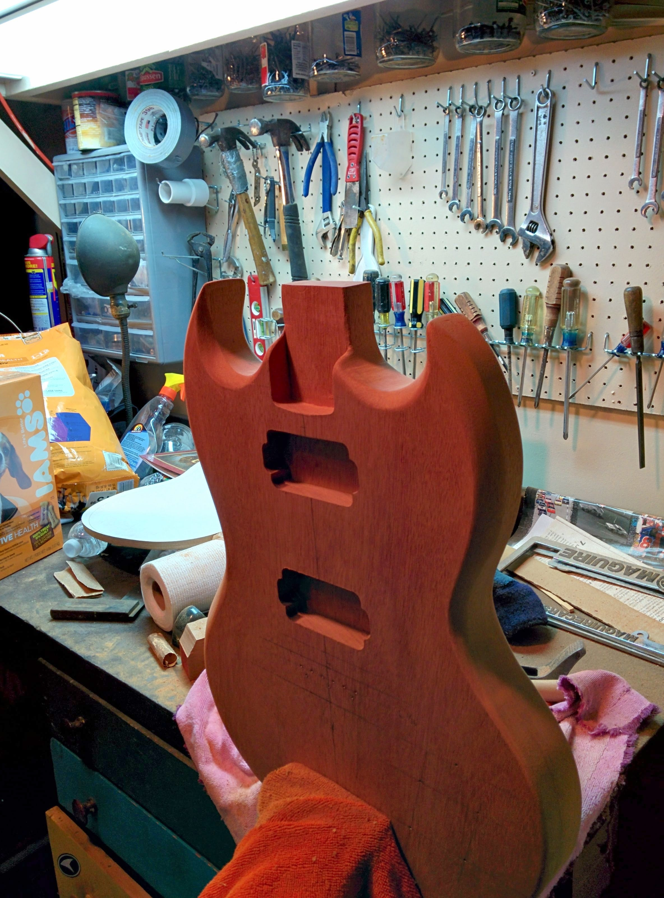
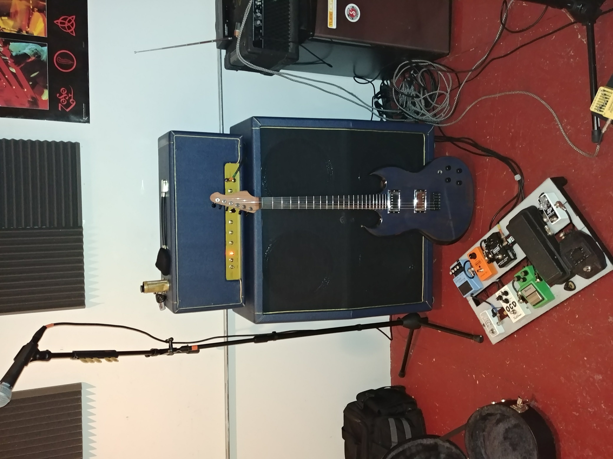

I had felt the itch before. The first time was in December of 2013 when I saw a picture of a DIY guitar while home with family for Christmas. An idea was planted in my head that would become an obsession that led to building my first guitar, then an amplifier, and several years of posing as a cover band around Salem and Boston with friends. It was the perfect confluence of my love of building, learning new skills, and music. While the band is no more, everything I learned has continued to grow and I continue to build out my electronics and woodworking skills whenever time allows, or whenever something around the house needs repair.



In June of 2025, I sat down with my wife and asked for time to go heads down on a project. The same itch I felt over 10 years earlier struck again. I'd been reading about agentic AI for months. I'd been a heavy ChatGPT user since early 2025. But I was immediately struck when I test drove Claude Code for the first time that weekend. Inspiration met opportunity as I was approaching the annual fantasy football draft season in less than 2 months. What's strange is I almost never watch football, but I truly enjoy the gamification and data analysis of the whole process. There's something about pulling together the latest data and analytics to outmatch your friends. For the past several years I was a regular in two draft leagues. One was a normal snake draft, the other an auction. The auction is a much more complex and open-ended problem, and a perfect sandbox for testing out this new tool.
I'm not a software developer. My background is mechanical & aerospace engineering. I write code occasionally, mostly Python or Jupyter notebooks for analysis or the odd MATLAB script, but I've never shipped anything resembling a production application. After a few hours with agentic AI I was hooked and wanted to push the limits to see what worked. I had a clear, low stakes goal and a deadline. The auction draft problem was much less trivial than the typical snake draft and I had some ideas for how to approach it.
I had about two months. I had a partner willing to absorb the parenting and household load on weekends. I had an emerging set of tools (Cursor, Claude Code becoming usable, Opus 4 just released) and almost no idea how to use them well.
The first thing I built wasn't the app
The first weekend, I tried to dive straight into the application. I wanted to start with the deterministic data and calculations so I could baseline what I built to tools I was already familiar with. I opened Cursor, picked Claude 3.5 Sonnet, and started prompting.
It went poorly.
The output it generated, in isolation, was reasonable. The problem was that I couldn't keep multiple conversations aligned with each other. I'd brainstorm an architecture in one chat, ask for an implementation in another, and an hour later I'd realize the implementation had drifted from the architecture. I'd ask for a refactor and the model would invent assumptions that contradicted decisions I'd made in a different window. I'd lose track of what I'd already decided versus what I was still considering.
By the end of that first weekend, I had three or four partial implementations of different ideas, none of which integrated with each other, and a growing sense that I was approaching this wrong. Instead of yelling at the agents, I stopped writing application code and went back to the start.
The three-layer context system
The answer I converged on, after a few more weekends of iteration, was a system I called USDAD: Unified Spec-Driven Agentic Development. The name was generated by Claude. I kept it because it was specific enough to remember and bland enough not to be embarrassing.
USDAD has three layers, each living in its own folder in the repo.
Global Steering Layer (.gsl/) is the development operating system. It contains the agent role definitions, the language-agnostic coding standards, and the methodology summary itself. Anything in .gsl/ is meant to apply across all projects. It's the rules of the game.
Project Context Layer (pcl/) is the project north star. It has four files: requirements.md (user stories with acceptance criteria), design.md (architecture and decisions), tasks.md (work breakdown with validation per task), and context.md (a running ledger that agents update as they work). Anything in pcl/ is specific to the project. When a new agent picks up a task, it reads pcl/ first.
Human Interface Layer is where I live. It's the brainstorming chat, the validation review, the "no, that's wrong, here's what I actually meant" correction loop. It's the conversation space and the mental model I bring to it, not a folder.
The split mattered because it gave each piece of information one home. Coding standards live in GSL, not scattered across project files. Project decisions live in PCL, not buried in chat history. My evolving understanding lives in the conversation. When a model went off the rails, I could trace which layer was wrong and fix it there, rather than patching the same misunderstanding in five different places.
Four personas, not one model
The other piece I converged on was role separation. In the planning phase, I'd ask the model to take on one of four personas:
Planner. Take my rough train-of-thought and turn it into a coherent first-draft requirements + design + tasks. Output: draft0_requirements.md, draft0_design.md, draft0_tasks.md.
Tech adversary. Read what the planner produced and challenge every assumption. Argue against feasibility. Push for failure modes. The goal was to get to 95% certainty before any code was written. Output: draft1_* versions with the weak assumptions exposed and either fixed or accepted.
Architect. Synthesize the final version of the project context layer. Resolve the tension between the planner's optimism and the tech adversary's skepticism. Make the calls. Output: the final requirements.md, design.md, tasks.md.
Executor. Take a single task from tasks.md, load the GSL rules and PCL context, write the code, run the tests, update the ledger, hand back to me for HITL validation, repeat.
Each persona had a different posture. The planner was generative; the tech adversary was destructive; the architect was decisive; the executor was disciplined. I could load the same model with the same project context, point it at a different persona, and get materially different output. The personas forced the model to play a specific role in each phase, instead of defaulting to its statistical mean.
What I'd do differently
I want to be honest about what didn't work, or what I'd build differently if I started over today.
Overengineered for the size of the project. USDAD is a real methodology with phase gates and folder structures and persona definitions. The actual fantasy football app didn't need all of that. A leaner version (half the files, half the formality) would have shipped faster. I built USDAD partly because I needed the methodology, and partly because building methodology was its own kind of procrastination from the harder work of building the app.
Phase 1 took too long. I spent four weekends in planning before writing serious application code. Some of that was necessary; a lot of it was me hiding from the discomfort of actually shipping. With current models (Opus 4.7, Sonnet 4.6) and current tools (Claude Code, MCP integrations), the planning phase could be tighter. A model in 2026 can hold more of the project in context than one in 2025 could.
The tech adversary persona was the most valuable, by far. If I were extracting a single technique from USDAD and giving it to someone else, it would be: always run a destructive critique on your design before you write code. The planner persona produces optimistic specs. The tech adversary catches the assumptions that would have caused weeks of wasted work. Most agentic dev workflows I've seen since don't have an explicit destructive-critique step, and I think they're worse for it.
The HITL gates were under-used. I designed the methodology with human-in-the-loop validation at every task. In practice, by August, I was waving through validation gates because I was running out of time. The methodology stayed; the discipline slipped. A meaningful chunk of the bugs I found in the final week were things I would have caught at HITL if I'd held the line. Enforcing HITL also required real effort. The agents were overeager to write code without supervision.
The methodology assumed I had clearer requirements than I did. Halfway through the project I had to throw out and rebuild the value function. USDAD didn't prevent that, and probably couldn't have. Spec-first development is only as good as your understanding of the problem when you write the spec. For exploratory work, you sometimes need to ship something terrible first, learn from it, and then write the real spec.
The journey, not the goal
I started this thinking it would be 2-3 weekends. I ended up putting in 5-6 weekends and a lot of weeknight hours. My wife was patient about it. I owe her that time, and I'm still paying it back.
The project worked. I won my auction draft, and I won the snake draft later. I'll write about that in the next post. But the win wasn't really the point. The point was that by the end of August 2025, I had something I didn't have at the start of June: a working theory of how to direct AI agents through a real project, and the muscle memory to actually do it. The failures and dead ends along the way were part of the learning, too.
That theory has carried into my day job. I'm a TPM at Amazon, working on agent-assisted workflows in a much more serious context than fantasy football. The patterns transferred: the role separation, the layered context, the destructive critique step, the HITL gates. The fantasy football app is the artifact. The USDAD methodology is the actual deliverable. Almost 9 months later, I'm on the 3rd or 4th iteration of what USDAD kicked off.
It was a silly game. It taught me what I needed to learn.
Source repos:
- USDAD methodology: github.com/halloffamer11/USDAD
- FFB_projections (Monte Carlo data engine): github.com/halloffamer11/ffb_calcs
- FFB (the application): github.com/halloffamer11/ffb